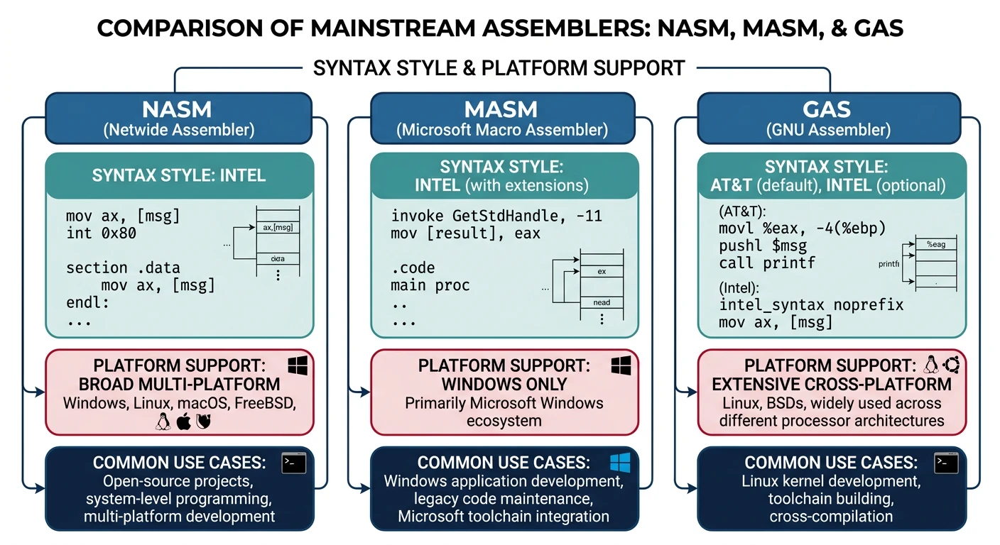
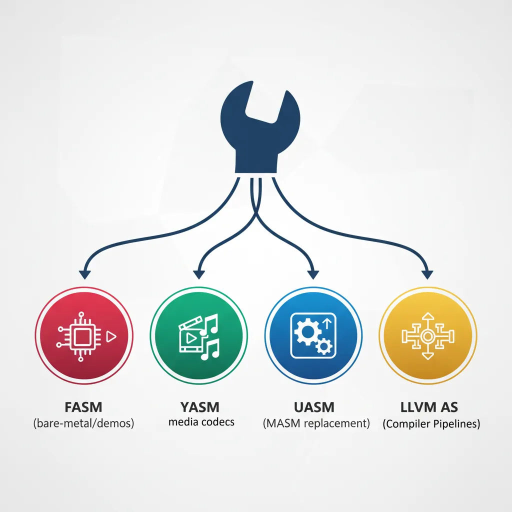
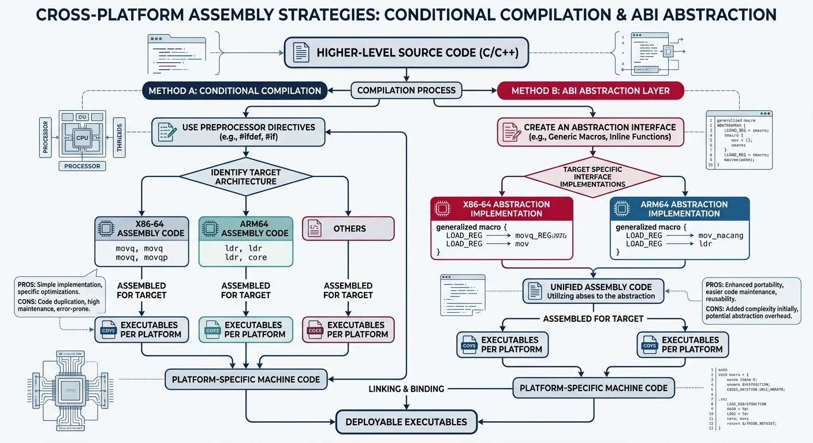

x86 Assembly Series Part 6: Complete Assembler Comparison
February 6, 2026Wasil Zafar35 min read
Master all seven major x86 assemblers—NASM, MASM, GAS, FASM, YASM, UASM, and LLVM AS—with comprehensive syntax comparisons, platform coverage, and guidance on choosing the right tool for your project.
The seven major x86 assemblers — NASM, MASM, GAS, FASM, YASM, UASM, and LLVM AS — and their primary use cases.
Choosing an Assembler: Your choice depends on target platform, toolchain integration, syntax preference, and project requirements. This guide covers all major assemblers: NASM (cross-platform), MASM (Windows), GAS (compilers/kernel), FASM (bare-metal), YASM (media), UASM (MASM replacement), and LLVM AS (compiler pipelines).
; hello_masm.asm - 64-bit Windows
extrn ExitProcess: PROC
extrn MessageBoxA: PROC
.data
caption db "Hello", 0
message db "Hello from MASM!", 0
.code
main PROC
sub rsp, 28h ; Shadow space + alignment
xor r9d, r9d ; MB_OK = 0
lea r8, caption
lea rdx, message
xor ecx, ecx ; hWnd = NULL
call MessageBoxA
xor ecx, ecx ; Exit code 0
call ExitProcess
main ENDP
END
Mainstream Assemblers

The three mainstream assemblers — NASM (cross-platform Intel), MASM (Windows Intel), and GAS (compiler AT&T) — with their key differentiators.
NASM (Netwide Assembler)
NASM is the most popular cross-platform assembler, known for its clean Intel syntax and excellent documentation. It produces output for multiple object file formats including ELF, PE/COFF, Mach-O, and raw binary.
Why NASM? Clean syntax, extensive macro system, cross-platform support, active development, and excellent for learning assembly.
Linux ELF64
NASM Hello World
; hello_nasm.asm - 64-bit Linux
section .data
msg db "Hello from NASM!", 10
len equ $ - msg
section .text
global _start
_start:
mov rax, 1 ; sys_write
mov rdi, 1 ; stdout
mov rsi, msg ; buffer
mov rdx, len ; length
syscall
mov rax, 60 ; sys_exit
xor rdi, rdi ; exit code 0
syscall
Preprocessor: Powerful macro system with %macro, %define, %rep
Local labels:.done: syntax for procedure-scoped labels
Data directives:db, dw, dd, dq for defining data
Output formats:-f elf64, -f win64, -f macho64, -f bin
MASM (Microsoft Macro Assembler)
MASM is Microsoft's assembler, tightly integrated with Visual Studio. It offers high-level features like PROC/ENDP, INVOKE, and structured programming constructs that can simplify Windows development.
MASM Strengths: Deep Visual Studio integration, INVOKE for simplified API calls, PROTO for function prototypes, excellent for Windows system programming.
Key MASM Features
PROC/ENDP: Procedure definition with automatic prologue/epilogue
INVOKE: High-level function call syntax with type checking
PROTO: Function prototype declarations for type safety
Structured directives:.IF, .WHILE, .REPEAT
Tools:ml.exe (32-bit), ml64.exe (64-bit)
MASM High-Level
MASM INVOKE Example
; Using MASM's INVOKE for cleaner API calls
includelib kernel32.lib
includelib user32.lib
MessageBoxA PROTO :DWORD, :DWORD, :DWORD, :DWORD
ExitProcess PROTO :DWORD
.data
szTitle db "MASM Demo", 0
szMsg db "High-level INVOKE syntax!", 0
.code
main PROC
INVOKE MessageBoxA, 0, ADDR szMsg, ADDR szTitle, 0
INVOKE ExitProcess, 0
main ENDP
END main
GAS (GNU Assembler)
GAS (GNU Assembler, invoked as as) is part of GNU Binutils and the default assembler for GCC. It traditionally uses AT&T syntax but supports Intel syntax via directives. GAS is essential for kernel development and compiler output.
GAS Use Cases: Linux kernel development, GCC inline assembly, reading compiler output, low-level system programming on Unix-like systems.
Comments:# for line comments, /* */ for block comments
Integration: Direct output from gcc -S, inline asm compatibility
Specialized Assemblers

Specialized assemblers and their niches — FASM (bare-metal/demos), YASM (media codecs), UASM (MASM replacement), and LLVM AS (compiler pipelines).
FASM (Flat Assembler)
FASM is a self-hosting assembler (written in assembly!) known for its powerful macro system, minimal dependencies, and ability to create pure binary files. Popular in the demo scene and OS development communities.
FASM Strengths: Self-hosting (no external dependencies), powerful preprocessor, excellent for bootloaders, demos, and learning how assemblers work internally.
FASM
FASM Hello World (Linux)
; hello_fasm.asm - FASM syntax
format ELF64 executable
entry _start
segment readable executable
_start:
mov eax, 1 ; sys_write
mov edi, 1 ; stdout
mov rsi, msg
mov edx, msg_len
syscall
mov eax, 60 ; sys_exit
xor edi, edi
syscall
segment readable writeable
msg db 'Hello from FASM!', 10
msg_len = $ - msg
Self-hosting: The assembler is written in itself—no runtime dependencies
Multiple output:format PE64, format ELF64 executable, format binary
Powerful macros: Can define complex structures and pseudo-instructions
Direct executable: Can produce executables without a linker
Variants:fasm (original), fasmg (next-gen with improved macro system)
Bootloader
FASM MBR Bootloader
; boot.asm - Simple bootloader in FASM
format binary
use16
org 0x7C00
start:
mov ax, 0x07C0
mov ds, ax
mov si, message
print_loop:
lodsb
or al, al
jz hang
mov ah, 0x0E
int 0x10
jmp print_loop
hang:
jmp hang
message db 'Hello from bootloader!', 0
times 510 - ($ - $$) db 0
dw 0xAA55
YASM
YASM is a rewrite of NASM designed for better performance and modularity. It's particularly popular for media codec development (x264, x265, FFmpeg) due to its speed and NASM compatibility.
YASM Strengths: Faster than NASM, modular architecture, NASM-compatible syntax, widely used in multimedia projects.
NASM-compatible: Drop-in replacement for most NASM code
GAS-compatible: Can also parse GAS/AT&T syntax
Performance: Generally faster assembly times than NASM
Modular: Supports multiple parsers and output formats
Note: Development has slowed; NASM has caught up in features
UASM
UASM (JWASM fork) is a MASM-compatible assembler that runs on multiple platforms. It offers MASM syntax compatibility with modern extensions, making it ideal when you need MASM features on non-Windows systems.
UASM Strengths: MASM syntax on Linux/macOS, open-source MASM replacement, supports AVX-512 and modern instruction sets, actively maintained.
UASM
UASM Example (MASM-Compatible on Linux)
; hello_uasm.asm - MASM syntax on Linux via UASM
.686
.model flat, stdcall
option casemap:none
.data
msg db "Hello from UASM!", 10, 0
.code
_start:
; sys_write(1, msg, 17)
mov eax, 4
mov ebx, 1
mov ecx, OFFSET msg
mov edx, 17
int 80h
; sys_exit(0)
mov eax, 1
xor ebx, ebx
int 80h
end _start
MASM-compatible: Supports PROC, INVOKE, PROTO, structured directives
Cross-platform: Runs on Windows, Linux, macOS
Modern ISA: Full AVX, AVX2, AVX-512 support
Output formats: ELF, PE/COFF, OMF, BIN
HJWasm-64: Variant with enhanced 64-bit support
LLVM AS (LLVM Assembler)
LLVM AS (llvm-mc) is the assembler in the LLVM toolchain. It's primarily used in compiler pipelines and integrates with Clang. While you can use it directly, it's most commonly encountered when examining or generating LLVM/Clang output.
LLVM AS Use Cases: Compiler development, JIT compilation, examining Clang output, assembly-level optimizations in LLVM-based projects.
When developing assembly code that needs to work across platforms, you have several approaches:

Cross-platform assembly strategies — conditional compilation, ABI abstraction layers, and platform-specific entry points.
Key Insight: The choice between Intel and AT&T syntax is largely personal preference. The bigger challenge is handling ABI differences (calling conventions, system calls) between operating systems.
Strategy 1: Use NASM with Conditional Assembly
NASM
Platform-Conditional Code
; cross_platform.asm - Single source, multiple targets
%ifdef LINUX
%define SYS_write 1
%define SYS_exit 60
%elifdef WINDOWS
extern WriteFile
extern ExitProcess
%endif
section .text
global _start
_start:
%ifdef LINUX
mov rax, SYS_write
mov rdi, 1
mov rsi, msg
mov rdx, len
syscall
%elifdef WINDOWS
; Windows API calls would go here
%endif